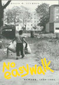
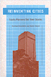

|
|
An
American Feminist in Palestine
The Intifada Years
Gluck, Sherna Berger
A personal journey forces the author to confront her Jewish identity
and Western feminism
248 pp • 6x9 • Fall 1994
paper 1-56639-191-1
EAN 978-1-56639-191-7
cloth 1-56639-190-3
EAN 978-1-56639-190-0
|
|
|
Back
to Earth
Tomorrow's Environmentalism
Weston, Anthony
An environmentalism that restores humans' connection to Earth
216 pp • 5.5x8.25 • Fall 1994
paper 1-56639-237-3
EAN 978-1-56639-237-2
cloth 1-56639-236-5
EAN 978-1-56639-236-5
|
|
|
Bridging
the Americas
The Literature of Paule Marshall, Toni Morrison, and Gayl Jones
Coser, Stelamaris
A powerful argument for extending the boundaries of what is categorized
as American literature
240 pp • 5.5x8.25 • Fall 1994
paper 1-56639-267-5
EAN 978-1-56639-267-9
cloth 1-56639-266-7
EAN 978-1-56639-266-2
|
|
|
Class
of '66
Living in Suburban Middle America
Lyons, Paul
Tracing the lives of the apolitical, suburban youth of the 1960s
288 pp • 5.5x8.25 • Fall 1994
paper 1-56639-214-4
EAN 978-1-56639-214-3
cloth 1-56639-213-6
EAN 978-1-56639-213-6
|
| 
|
Confronting
the Margaret Mead Legacy
Scholarship, Empire, and the South Pacific
Foerstel, Lenora, and Angela Gilliam, eds.
A multicultural outlook scrutinizing Mead's impace on Western anthropology
New in Paperback!
309 pp • Fall 1991
paper 1-56639-261-6
EAN 978-1-56639-261-7
|
|
|
Conversions
A Philosophic Memoir
Rosenthal, Abigail L.
An autobiographical account illustrates the relationship between
individuals and history
296 pp • 6x9 • Fall 1994
paper 1-56639-220-9
EAN 978-1-56639-220-4
cloth 1-56639-219-5
EAN 978-1-56639-219-8
|
|
|
Covering
Accident Costs
Insurance, Liability, and Tort Reforms
Rahdert, Mark C.
The debate over the structure of tort law and victim compensation
264 pp • 6x9 • Fall 1994
paper 1-56639-233-0
EAN 978-1-56639-233-4
cloth 1-56639-232-2
EAN 978-1-56639-232-7
|
|
|
Deciding
to be Legal
A Maya Community in Houston
Hagan, Jacqueline Maria
Understanding the process of becoming legal from the perspective
of an immigrant community
224 pp • 5.5x8.25 • Fall 1994
paper 1-56639-257-8
EAN 978-1-56639-257-0
cloth 1-56639-256-X
EAN 978-1-56639-256-3
|
|
|
Detroit
Lives
Mast, Robert H., ed.
A story of spirit, growth, and survival in a city that reflects
America's urban problems
368 pp • 6x9 • Fall 1994
paper 1-56639-226-8
EAN 978-1-56639-226-6
cloth 1-56639-225-X
EAN 978-1-56639-225-9
|
|
|
Eyes
Without Country
Searching for a Palestinian Strategy of Liberation
Dajani, Souad R.
A strategy of nonviolent civilian resistance for Palestinian sovereignty
256 pp • 6x9 • Fall 1994
paper 1-56639-241-1
EAN 978-1-56639-241-9
cloth 1-56639-240-3
EAN 978-1-56639-240-2
|
|
|
Feminist
Organizations
Harvest of the New Women's Movement
Ferree, Myra Marx, and Patricia Yancey Martin, eds.
Twenty-six original essays look at contemporary feminist organizations,
how they've survived, the effects of their work, and where the women's
movement is headed
488 pp • 6x9 • Fall 1994
paper 1-56639-229-2
EAN 978-1-56639-229-7
cloth 1-56639-228-4
EAN 978-1-56639-228-0
|
| 
|
The
First Suburban Chinatown
The Remarking of Monterey Park, California
Fong, Timothy P.
Ethnicity issues fuel internal strife as a community faces change
New in Paperback!
240 pp • 6x9 • Fall 1993
paper 1-56639-262-4
EAN 978-1-56639-262-4
|
|
|
For
People and the Planet
Holism and Humanism in Environmental Ethics
Marietta, Jr., Don E., and Holmes Rolston III
A new environmental ethic calls for the protection of the Earth
while recognizing the special nature of humans
256 pp • 5.5x8.25 • Fall 1994
paper 1-56639-247-0
EAN 978-1-56639-247-1
cloth 1-56639-246-2
EAN 978-1-56639-246-4
|
|
|
Gay
and Lesbian Politics
Sexuality and the Emergence of a New Ethic
Blasius, Mark
The making of gay and lesbian politics
240 pp • 5.5x8.25 • Fall 1994
paper 1-56639-174-1
EAN 978-1-56639-174-0
cloth 1-56639-173-3
EAN 978-1-56639-173-3
|
|
|
In
Search of Parenthood
Coping with Infertility and High-Tech Conception
Lasker, Judith N., and Susan Borg
Gripping personal and professional accounts of methods of conception
for everyone coping with infertility
Revised and Updated
240 pp • 6x9 • Fall 1994
paper 1-56639-259-4
EAN 978-1-56639-259-4
cloth 1-56639-258-6
EAN 978-1-56639-258-7
|
|
|
In
The Place To Be
Guy Trebar's New York
Trebay, Guy, and Sylvia Plachy
All of New York is Guy Trebay's New York: the streets, the alleys,
the chic shops, the zoo; the rappers, the drag queens, the kids
in the public pool, the subway artist
384 pp • 5.5x8.5 • Fall 1994
paper 1-56639-208-X
EAN 978-1-56639-208-2
cloth 1-56639-278-0
EAN 978-1-56639-278-5
|
|
|
An
Indian in White America
Monroe, Mark, Carolyn M. Reyer, and Kenneth Lincoln
A Lakota Sioux overcomes personal struggles to help his community
256 pp • 6x9 • Fall 1994
paper 1-56639-235-7
EAN 978-1-56639-235-8
cloth 1-56639-234-9
EAN 978-1-56639-234-1
|
|
|
Individual
Voices, Collective Visions
Fifty Years of Women in Sociology
Goetting, Ann, and Sarah Fenstermaker, eds.
Original essays by eighteen senior women sociologists on their
diverse personal histories and professional experiences
376 pp • 6x9 • Fall 1994
paper 1-56639-251-9
EAN 978-1-56639-251-8
cloth 1-56639-250-0
EAN 978-1-56639-250-1
|
|
|
It
Comes from the People
Community Development and Local Theology
Hinsdale, Mary Ann, Helen M. Lewis, and S. Maxine Waller
An Appalachian community develops a theology of liberation
400 pp • 6x9 • Fall 1994
paper 1-56639-212-8
EAN 978-1-56639-212-9
cloth 1-56639-211-X
EAN 978-1-56639-211-2
|
|
|
Jews
and Gender
Responses to Otto Weininger
Harrowitz, Nancy A., and Barbara Hyams, eds.
International scholars examine the legacy of a turn-of-the-century
self-hating Austrian Jew
352 pp • 6x9 • Fall 1994
paper 1-56639-249-7
EAN 978-1-56639-249-5
cloth 1-56639-248-9
EAN 978-1-56639-248-8
|
|
|
Managing
Sickle Cell Disease in Low-Income Families
Hill, Shirley A.
A comprehensive account of SCD and its affect on low-income families
240 pp • 5.5x8.25 • Fall 1994
cloth 1-56639-188-1
EAN 978-1-56639-188-7
|
|
|
The
New Asian Immigration in Los Angeles and Global Restructuring
Ong, Paul, Edna Bonacich, and Lucie Cheng, eds.
How Asian immigration impacts the global economy
344 pp • 6x9 • Fall 1994
paper 1-56639-218-7
EAN 978-1-56639-218-1
cloth 1-56639-217-9
EAN 978-1-56639-217-4
|
|
|
New
Social Movements
From Ideology to Identity
Larana, Enrique, Hank Johnston, and Joseph R. Gusfield, eds.
Redefining the field of social movements
368 pp • 6x9 • Fall 1994
paper 1-56639-187-3
EAN 978-1-56639-187-0
cloth 1-56639-186-5
EAN 978-1-56639-186-3
|
| 
|
No
Easy Walk
Newark, 1980-1993
Stummer, Helen M.
A vivid portrayal of an American urban neighborhood
160 pp • 7x10 • Fall 1994
paper 1-56639-243-8
EAN 978-1-56639-243-3
cloth 1-56639-242-X
EAN 978-1-56639-242-6
|
|
|
Patriarchy
on the Line
Labor, Gender, and Ideology in the Mexican Maquila Industry
Tiano, Susan
Women working in U.S.-owned border factories transform their roles
in the economy and culture
272 pp • 6x9 • Fall 1994
paper 1-56639-196-2
EAN 978-1-56639-196-2
cloth 1-56639-195-4
EAN 978-1-56639-195-5
|
|
|
Paying
the Price
Ignacio Ellacuria and the Murdered Jesuits of El Salvador
Whitfield, Teresa, and Alvara de Soto
An investigation of one of the morst tragic and divisive events
in Latin American history
528 pp • 6x9 • Fall 1994
paper 1-56639-253-5
EAN 978-1-56639-253-2
cloth 1-56639-252-7
EAN 978-1-56639-252-5
|
|
|
Phillies
'93
An Incredible Season
Westcott, Rich
Relive the Phillies 1993 experience
224 pp • 7x10 • Fall 1994
paper 1-56639-231-4
EAN 978-1-56639-231-0
|
| 
|
Poems
Performance Pieces Proses Plays Poetics
Schwitters, Kurt, Jerome Rothenberg, and Pierre Joris
The first book of Kurt Schwitters' writings translated into English
New in Paperback!
288 pp • 7x10 • Spring 1993
paper 1-56639-264-0
EAN 978-1-56639-264-8
|
|
|
Politics
and the Class Divide
Working People and the Middle Class Left
Croteau, David
Examining the impact of class status on political participation
320 pp • 6x9 • Fall 1994
paper 1-56639-255-1
EAN 978-1-56639-255-6
cloth 1-56639-254-3
EAN 978-1-56639-254-9
|
| 
|
Race
and Mixed Race
Zack, Naomi
A philosopher of mixed race contemplates racial identity in America
New in Paperback!
232 pp • 6x9 • Fall 1993
paper 1-56639-265-9
EAN 978-1-56639-265-5
|
| 
|
Rebuilding
a Low-Income Housing Policy
Bratt, Rachel G.
A new strategy proposed for producing affordable housing for low-income
people through non-profit community-based organizations
New in Paperback!
368 pp • Spring 1989
paper 1-56639-263-2
EAN 978-1-56639-263-1
|
| 
|
Reinventing
Cities
Equity Planners Tell Their Stories
Krumholz, Norman, and Pierre Clavel
Interviews with planners devoted to the needs of the poor and working
class
272 pp • 6x9 • Fall 1994
paper 1-56639-210-1
EAN 978-1-56639-210-5
cloth 1-56639-209-8
EAN 978-1-56639-209-9
|
| 
|
The
Solicitor General
The Politics of Law
Salokar, Rebecca Mae
Showing that increased politicization of the Justice Department
makes the work of the nation's lawyer an integral component of executive
policy-making
New in Paperback!
250 pp • 6x9 • Spring 1992
paper 1-56639-260-8
EAN 978-1-56639-260-0
|
|
|
The
Sponsored Life
Ads, TV, and American Culture
Savan, Leslie
Exposing advertising's inner workings
368 pp • 6x9 • Fall 1994
paper 1-56639-245-4
EAN 978-1-56639-245-7
cloth 1-56639-244-6
EAN 978-1-56639-244-0
|
| 
|
Swing
Era New York
The Jazz Photographs of Charles Peterson
Stokes, W. Royal, Don Peterson, and Stanley Dance
An intimate look at the teeming world of New York Swing in the
'20s and '30s
232 pp • 10x8 • Fall 1994
cloth 1-56639-227-6
EAN 978-1-56639-227-3
|
|
|
Talking
Health with Dr. Brian McDonough
McDonough, Brian P.
Leading experts answer commonly asked questions
264 pp • 6x9 • Fall 1994
cloth 1-56639-207-1
EAN 978-1-56639-207-5
|
|
|
Understanding
Enterprise Liability
Rethinking Tort Reform for the Twenty-First Century
Nolan, Virginia, and Edmund Ursin
Historical insights and a fresh perspective on the politics and
possibilities for sensible tort reform
272 pp • 5.5x8.25 • Fall 1994
cloth 1-56639-230-6
EAN 978-1-56639-230-3
|
|
|
The
Union Inspiration in American Politics
The Autoworkers and the Making of a Liberal Industrial Order
Amberg, Stephen
A sweeping reinterpretation of New Deal liberalism and industrial
relations
368 pp • 6x9 • Fall 1994
cloth 1-56639-189-X
EAN 978-1-56639-189-4
|
|
|
Women
of Japan and Korea
Continuity and Change
Gelb, Joyce, and Marian Lief Palley, eds.
Original research on the changing roles of women in Japan and Korea
320 pp • 6x9 • Fall 1994
paper 1-56639-224-1
EAN 978-1-56639-224-2
cloth 1-56639-223-3
EAN 978-1-56639-223-5
|
|
|
Women
Resisting AIDS
Feminist Strategies of Empowerment
Schneider, Beth E., and Nancy E. Stoller
Original essays discuss the increasingly rapid spread of AIDS among
women, including the responses of women of color, lesbians, and
low-income women
352 pp • 6x9 • Fall 1994
paper 1-56639-269-1
EAN 978-1-56639-269-3
cloth 1-56639-268-3
EAN 978-1-56639-268-6
|
|
|
Working
Poor
Farmworkers in the United States
Griffith, David and Ed Kissam with Jeromino Camposeco, Anna García,
Max Pfeffer, David Runsten, and Manuel Valdes Pizzini
A highly readable national overview of migrant labor patterns
368 pp • 6x9 • Fall 1994
paper 1-56639-239-X
EAN 978-1-56639-239-6
cloth 1-56639-238-1
EAN 978-1-56639-238-9
|
| 
|
World
Without Words
The Social Construction of Children Born Deaf and Blind
Goode, David, and Irving Kenneth Zola
Exploring communication with children born deaf-blind
336 pp • 5.5x8.25 • Fall 1994
paper 1-56639-216-0
EAN 978-1-56639-216-7
cloth 1-56639-215-2
EAN 978-1-56639-215-0
|